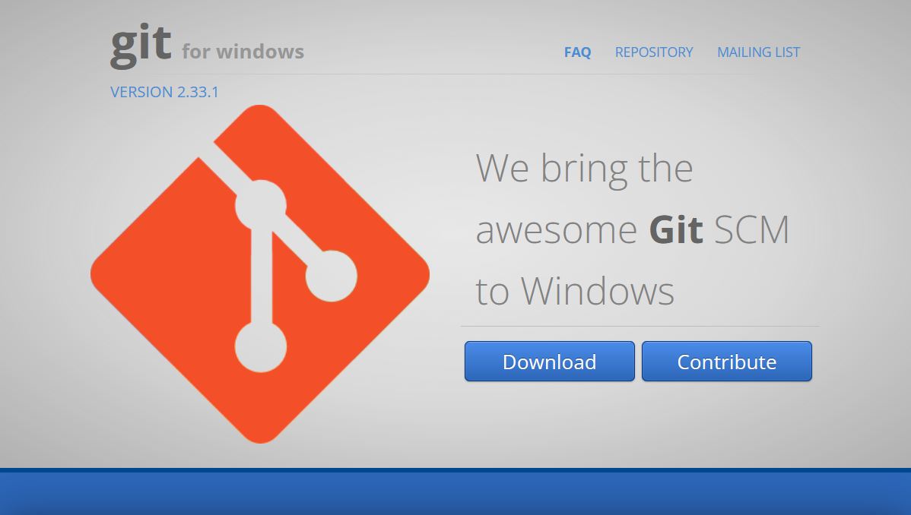
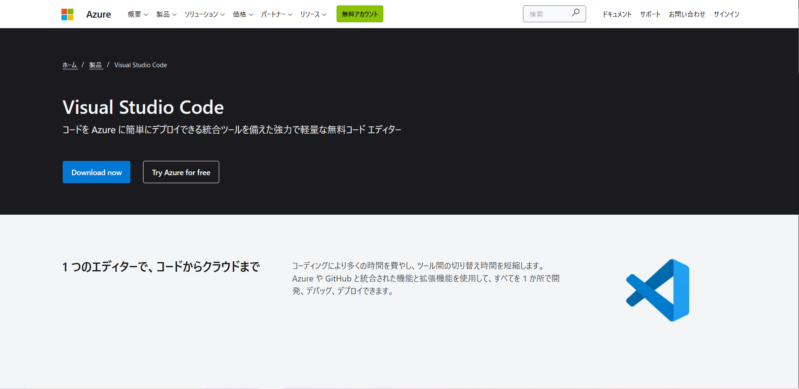
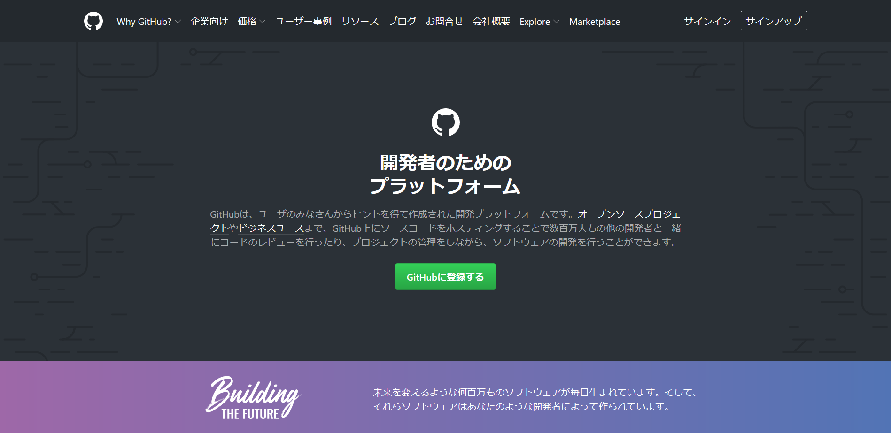

① Git・Visual Studio Codeのインストール
(1).Git for Windows 公式サイトへアクセス

(2).Gitをダウンロード
(3).Visual Studio
Code公式サイトへアクセス

② GithubとVSCode連携
(1).Githubのサイトにアクセス

(2).新しいリポジトリを作成
(3).ローカルのファイルにGit Cloneでダウンロード
(4).VSCodeでフォルダを開いて編集
以前作ったブロック崩しゲーム
このリンクから飛ぶ